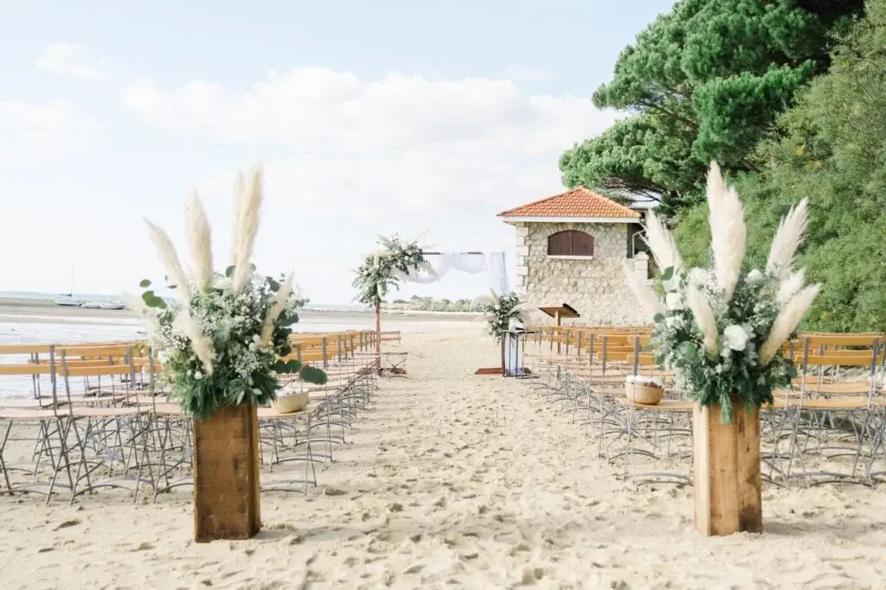

The Arcachon Bay
Would you like to celebrate your union with a feet-in-the-water symbolic ceremony on the Arcachon Bay, but don't know how?
Don't panic! I'm here to help with your planning, your decor and above all your choice of the ideal setting for exchanging your vows.

By choosing to marry on the Arcachon Bay, you open up many possibilities, from beaches to reception venues with sweeping views across the whole bay.
Usually held outdoors, the symbolic ceremony is increasingly sought after by couples. Church weddings are less and less in demand; couples now prefer to promise themselves to each other in a beautiful, personalised ceremony that fully represents them.
As for decor, what could be better than a simple, beautiful white arch decked with flowers in your wedding colours, with rows of white chairs adorned with floral wreaths? For the rest of the decor, let your imagination run free: as a wedding designer, I'll take care of creating personalised decorations.
The beauty of the site and the splendour of your union will leave your guests speechless. Whether for a wedding of 30 or 200 people, a symbolic ceremony suits every style of wedding.

Remember to let your guests know about the ceremony location, especially if it will take place on the beach. This can matter a lot to anyone planning to wear beautiful high heels. These little details help all your loved ones relax and watch your exchange of vows with eyes sparkling with joy.

Organising a ceremony isn't always easy, so I'm here to help and find everything you need in Bordeaux and the surrounding region. As a high-end wedding planner, I can help you find a theme that reflects you, with decor in your image that suits you perfectly, inspired by your personal tastes, your style and your personality, so that everything is as idyllic as in your dreams. With my network of incredible suppliers, I'll offer you the very best to carry you all the way to your dreams; all you'll have to do is let yourselves be swept away by the magic of these stunning havens of peace!
We'll talk together about your choices and any special requests for your wedding so your union is perfect, and as a bespoke wedding planner, I'll do everything to make your wedding feel straight out of a fairytale. With all these little details, everything is in place for you to enjoy memorable moments! So, tempted? If so, don't hesitate to call or email me.
Lovely Day Event offers several services
Wedding planning
I step in at every stage of your preparations and guide you through your choices, bringing ideas and suggestions so that your wedding looks like no one but you.
On-the-day coordination
I will be the conductor of your day, managing the suppliers, the set-up of your decor and the smooth running of this beautiful day.
Wedding design
Creative and passionate, I am a certified Wedding Designer and I create a scenographic atmosphere that matches the theme of your wedding. Styling is included in the Signature package, or offered as an add-on to on-the-day coordination.